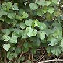
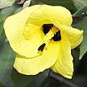
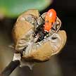
Sea hibiscus
Hibiscus tiliaceus |
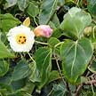
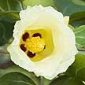
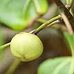
Baru-baru
Thespesia populnea |
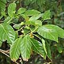
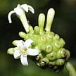
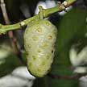
Noni or Mengkudu
Morinda citrifolia |
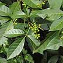
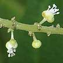
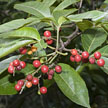
Tit-berry
Allophylus cobbe |
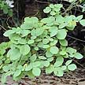
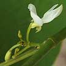
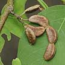
Petai laut
Desmodium umbellatum |
| Shrub
to tall tree (10-15m). Leaves heart-shaped (10-15cm), dark green and
shiny above, white and finely furry beneath. Flower yellow with maroon
eye, stigma maroon. Fruit ripens to a tiny dry capsule (2-3cm) surrounded
by the calyx. Commonly seen in our back mangroves and sea shores.
Planted in some coastal parks. |
Shrub
to tall tree (2-10m). Leaves more triangular than heart-shaped, fleshy
and shiny with yellow veins. Flower yellow with maroon eye, stigma
pale yellow. Fruits large (2-4cm), flattened globe. Sometimes seen
on our back mangroves and sea shores. |
Shrub
or small tree (5-8m). Leaves thin glossy (10-40cm). Fruits oval and
smelly when ripe. Flowers white, tubular emerging from an egg-shaped
structure. Commonly seen in our back mangroves and shores. |
Shrub
to tree (3-5m tall), sometimes a climber. Leaf made up of three leaflets
(4-9cm long). Flowers tiny white on spikes. Berries green ripening
red or orange. Commonly seen in our back mangroves and shores. |
Shrub
to small tree (to about 3m) "often prostrate towards the sea". Compound
leaf of three leaflets. Small flowers (1-1.5cm) creamy white in short
clusters. Pod brown, short (3-4cm). Sometimes seen on our shores. |
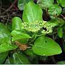
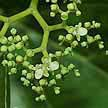
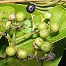
Buas buas
Premna corymbosa
|
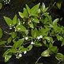
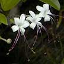
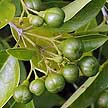
Gambir laut
Clerodendrum inerme
|
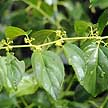
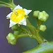
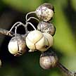
Peria laut
Colubrina asiatica
|
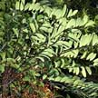
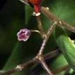
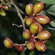
Tongkat
ali
Eurycoma longifolia
|
|
| First
starts as a climber or 'straggling shrub' may eventually become a
tree up to 5m tall. Leaves leathery, light green in various shapes.
Flowers tiny white on a many branched cluster. Fruits tiny, oval,
black. Commonly seen on many of our shores. |
Shrub
with drooping stems (0.5-3m) to small tree (up to 10m). Leaves thinly
fleshy, smooth (1.5-14cm). Flower white trumpet-shaped with long purple
stamens, in clusters. Fruit round or egg-shaped, green ripening to
black. Sometimes seen on our shores. |
Climbing
shrub 4m to 6-7m. Vine-like branches. Leaves (4-9cm) thin, dark glossy
green with a toothed margin. Flowers small star-like (0.4cm). Fruits
are small capsules (1cm). Sometimes seen on our shores. |
Shrub
to small tree (2-3m) with an umbrella-like rosette of long leaves
(50-60cm) is made up of 45-80 leaflets. Tiny flowers purplish-crimson,
turn into oval fruits that ripen yellow then red. Sometimes seen on
rocky cliffs and shores. It is Critically endangered. |
|
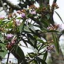
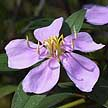
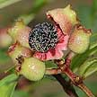
Sendudok
Melastoma malabathricum
|
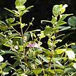
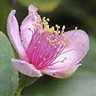
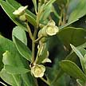
Kemunting
Rhodomyrtus tomentosa
|
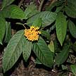
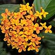
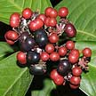
Jarum-jarum
Ixora congesta
|
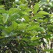
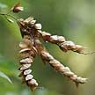
Serengan
Flemingia strobilifera |
|
| Shrub
to small tree (1-2m). Leaves narrow (5-9cm) with 3-5 longitudinal
veins. Flowers purplish-pink, large (5-7cm). Cup-shaped calyx. Fruits
berry-like. Commonly seen in many of our wild place. |
Shrub
(1-3m). Young parts whitish, woolly. Leaves narrow with 3 parallel
veins. Flowers pink (3-4cm). Berries are oblong topped by persistant
sepals. Planted at Chek Jawa. |
Shrub
to small tree (7m). Leaves large (12-30cm long), dark green. Flowers
seasonally, bright orange in bunches. Berry ripening red then purple
or black. In forests including coastal forests. |
Shrub
(1-1.5m). Leaves with prominent veins, arranged alternately. Papery
flower bracts in a long drooping row. Pods explode when ripe. Seeds
tiny, brown-black with red mottling. Planted on Chek Jawa. |
|